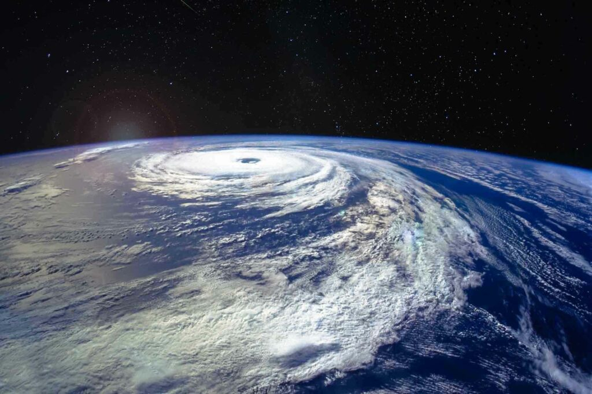
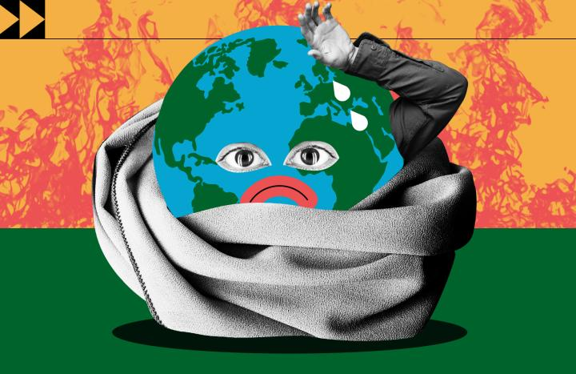
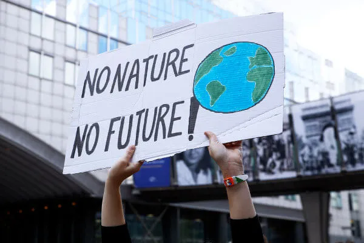

Você sabe o que são as mudanças climáticas? Essas alterações no clima e na temperatura são consequências diretas tanto de processos naturais quanto das ações dos seres humanos.
De modo geral, as mudanças climáticas são as alterações que ocorrem a longo prazo nos padrões climáticos do planeta.
Ou seja, são as mudanças (de temperatura, pressão atmosférica, umidade, pluviosidade, entre outros fatores climáticos) que acontecem com o passar do tempo, no meio ambiente ou em determinado bioma ou região.
Essas variações não costumam acontecer de uma hora para outra: são parte de um longo processo, que pode ser tanto natural quanto consequência das ações humanas no decorrer de um período.

As mudanças climáticas não aconteceram de uma hora para outra. A nossa história evolutiva está intrinsecamente ligada às alterações provocadas no clima, as quais são observadas desde a formação do planeta Terra. Ao longo dos 4,6 bilhões de anos do planeta, o clima modificou-se. Houve, nos últimos 400 mil anos, quatro ciclos diferentes, glaciais e interglaciais.
Nos últimos 150 anos, no entanto, o planeta teve sua temperatura aumentada de maneira considerável. Estudos indicam que a Terra aquece-se cerca de 0,2°C por década. Estudos feitos pela Nasa e pela Noaa (Administração Oceânica e Atmosférica Nacional) mostram que a temperatura registrada na Terra em 2018 foi a quarta mais alta nos últimos 140 anos. Em 2017, a temperatura aumentou cerca de 0,83ºC com base na temperatura média registrada entre os anos de 1951 e 1980. A temperatura média anual mais alta foi registrada no ano de 2016.

Mas por que a temperatura aumentou? De acordo com a Organização Meteorológica Mundial, o planeta está mais quente do que no período anterior ao processo de industrialização. O cenário mundial após a Revolução Industrial mudou não só economicamente, mas também o modo produtivo, provocando mudanças no cenário ambiental.
O consumo exagerado e a produção elevada, além de aumentar a exploração dos recursos naturais, provocaram também o aumento da poluição atmosférica, por causa da emissão gases poluentes pelas indústrias e automóveis. A produção também acelerou o desmatamento, o que também provocou alterações no clima.
Mas, afinal, quais são as consequências das mudanças climáticas? Alguns resultados das causas mencionadas anteriormente são:
Essas consequências são reflexos dos impactos causados ao meio ambiente e à sociedade. Quanto maiores as taxas de poluição, por exemplo, maiores os danos aos ecossistemas, biomas e à sociedade.
A fauna e a flora são prejudicadas, acarretando um processo de erosão e desertificação que ajuda a aumentar a temperatura média, por exemplo.
Além disso, a baixa umidade do ar, somada à alta concentração de poluentes, pode implicar em complicações respiratórias por causa do ressecamento das mucosas, provocando sangramento pelo nariz, ressecamento da pele e irritação dos olhos.
E as mudanças já estão acontecendo: segundo um relatório da ONU de 2018, o caminho atual das emissões de dióxido de carbono na atmosfera pode acabar aumentando as temperaturas globais em até 4,4 °C até o final do século.
O ideal, segundo especialistas, seria limitar esse aumento para não mais que 1,5 °C como forma de evitar mudanças ainda mais drásticas.
Nossas ações estão todas interligadas, gerando consequências diretas e indiretas para as mudanças climáticas.
Por isso, é importante saber identificar os problemas que estamos causando e, a partir daí, buscar soluções para impedir a degradação total do meio-ambiente.

Mudanças climáticas são alterações provocadas nos padrões climáticos a longo prazo com base nas alternâncias meteorológicas, ou seja, nas condições do tempo observadas por um período. Elas podem ser causadas por processos naturais e também pela ação do homem. Acompanhe a tabela a seguir:
| Incidência solar: A radiação solar que chega até a superfície pode variar, podendo ser mais elevada ou reduzida em alguns períodos. | Queima de combustíveis fósseis, o que emite à atmosfera gases de efeito estufa. |
| Órbita da Terra: O planeta sofre variação em sua órbita segundo os movimentos que realiza, o que faz ele receber mais ou menos radiação solar. | Aumento do desmatamento, ou seja, da retirada da cobertura vegetal. |
| EL Niño e La Niña: Esses fenômenos causam alterações na temperatura média das águas do Pacífico, modificando as condições climáticas das áreas em que atuam. | Emissão de gases poluentes à atmosfera por indústrias e automóveis. |
| Atividade vulcânica: Os vulcões podem apresentar períodos de maior atividade. Em situações de elevadas ocorrências de erupções vulcânicas, ocorre o sistema de resfriamento climático da Terra. | Poluição do solo e dos recursos hídricos, o que altera o equilíbrio ambiental. |